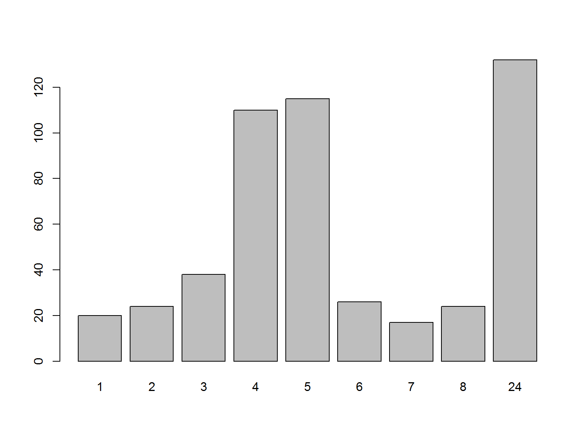
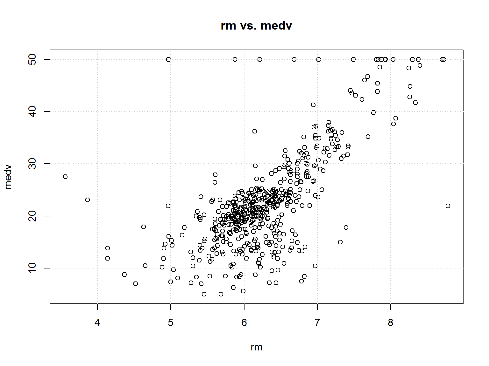

Linear Models
Load data
We are going to use the famous Boston housing data. The goal is to predict the median house value in the suburbs of Boston, given characteristics about the surrounding area of each house.
This data is supplied in the “MASS” R package so if we don’t have this package installed we need to do so:
# install.packages("MASS")
library(MASS)Load in Boston data. This command creates a dataframe called “Boston”:
data(Boston)Check out its dimensions:
dim(Boston)## [1] 506 14Look at the first few records and its structure:
head(Boston)## crim zn indus chas nox rm age dis rad tax ptratio black
## 1 0.00632 18 2.31 0 0.538 6.575 65.2 4.0900 1 296 15.3 396.90
## 2 0.02731 0 7.07 0 0.469 6.421 78.9 4.9671 2 242 17.8 396.90
## 3 0.02729 0 7.07 0 0.469 7.185 61.1 4.9671 2 242 17.8 392.83
## 4 0.03237 0 2.18 0 0.458 6.998 45.8 6.0622 3 222 18.7 394.63
## 5 0.06905 0 2.18 0 0.458 7.147 54.2 6.0622 3 222 18.7 396.90
## 6 0.02985 0 2.18 0 0.458 6.430 58.7 6.0622 3 222 18.7 394.12
## lstat medv
## 1 4.98 24.0
## 2 9.14 21.6
## 3 4.03 34.7
## 4 2.94 33.4
## 5 5.33 36.2
## 6 5.21 28.7str(Boston)## 'data.frame': 506 obs. of 14 variables:
## $ crim : num 0.00632 0.02731 0.02729 0.03237 0.06905 ...
## $ zn : num 18 0 0 0 0 0 12.5 12.5 12.5 12.5 ...
## $ indus : num 2.31 7.07 7.07 2.18 2.18 2.18 7.87 7.87 7.87 7.87 ...
## $ chas : int 0 0 0 0 0 0 0 0 0 0 ...
## $ nox : num 0.538 0.469 0.469 0.458 0.458 0.458 0.524 0.524 0.524 0.524 ...
## $ rm : num 6.58 6.42 7.18 7 7.15 ...
## $ age : num 65.2 78.9 61.1 45.8 54.2 58.7 66.6 96.1 100 85.9 ...
## $ dis : num 4.09 4.97 4.97 6.06 6.06 ...
## $ rad : int 1 2 2 3 3 3 5 5 5 5 ...
## $ tax : num 296 242 242 222 222 222 311 311 311 311 ...
## $ ptratio: num 15.3 17.8 17.8 18.7 18.7 18.7 15.2 15.2 15.2 15.2 ...
## $ black : num 397 397 393 395 397 ...
## $ lstat : num 4.98 9.14 4.03 2.94 5.33 ...
## $ medv : num 24 21.6 34.7 33.4 36.2 28.7 22.9 27.1 16.5 18.9 ...Data Prep
How many distinct values are in each column?
We will use the lapply function:
distinctvals <- lapply(Boston, unique)
lengthdistinctvals <- lapply(distinctvals, length)
lengthdistinctvals <- unlist(lengthdistinctvals)
lengthdistinctvals## crim zn indus chas nox rm age dis rad
## 504 26 76 2 81 446 356 412 9
## tax ptratio black lstat medv
## 66 46 357 455 229Look at some bar plots:
barplot(table(Boston$chas))barplot(table(Boston$rad))
“chas” is actually a dummy variable whether the land bounds the Charles river, and “rad” is an index of accessibility to radial highways.
These variables should be treated as categorical, not numeric. We should change the data types:
Boston$chas <- as.character(Boston$chas)
Boston$rad <- as.character(Boston$rad)Exploratory Data Analysis (EDA)
Diagnostics on medv:
summary(Boston$medv)## Min. 1st Qu. Median Mean 3rd Qu. Max.
## 5.00 17.02 21.20 22.53 25.00 50.00hist(Boston$medv, breaks = 30)plot(sort(Boston$medv), main = "medv in ascending order", ylab = "medv")
grid()Look at a couple variables vs. medv:
plot(Boston$crim, Boston$medv, main = "crim vs. medv", xlab = "crim", ylab = "medv")
grid()cor(Boston$crim, Boston$medv)## [1] -0.3883046plot(Boston$rm, Boston$medv, main = "rm vs. medv", xlab = "rm", ylab = "medv")
grid()
cor(Boston$rm, Boston$medv)## [1] 0.6953599Look at correlations:
correlations <- cor(subset(Boston, select = -c(chas, rad)))
correlations## crim zn indus nox rm age
## crim 1.0000000 -0.2004692 0.4065834 0.4209717 -0.2192467 0.3527343
## zn -0.2004692 1.0000000 -0.5338282 -0.5166037 0.3119906 -0.5695373
## indus 0.4065834 -0.5338282 1.0000000 0.7636514 -0.3916759 0.6447785
## nox 0.4209717 -0.5166037 0.7636514 1.0000000 -0.3021882 0.7314701
## rm -0.2192467 0.3119906 -0.3916759 -0.3021882 1.0000000 -0.2402649
## age 0.3527343 -0.5695373 0.6447785 0.7314701 -0.2402649 1.0000000
## dis -0.3796701 0.6644082 -0.7080270 -0.7692301 0.2052462 -0.7478805
## tax 0.5827643 -0.3145633 0.7207602 0.6680232 -0.2920478 0.5064556
## ptratio 0.2899456 -0.3916785 0.3832476 0.1889327 -0.3555015 0.2615150
## black -0.3850639 0.1755203 -0.3569765 -0.3800506 0.1280686 -0.2735340
## lstat 0.4556215 -0.4129946 0.6037997 0.5908789 -0.6138083 0.6023385
## medv -0.3883046 0.3604453 -0.4837252 -0.4273208 0.6953599 -0.3769546
## dis tax ptratio black lstat medv
## crim -0.3796701 0.5827643 0.2899456 -0.3850639 0.4556215 -0.3883046
## zn 0.6644082 -0.3145633 -0.3916785 0.1755203 -0.4129946 0.3604453
## indus -0.7080270 0.7207602 0.3832476 -0.3569765 0.6037997 -0.4837252
## nox -0.7692301 0.6680232 0.1889327 -0.3800506 0.5908789 -0.4273208
## rm 0.2052462 -0.2920478 -0.3555015 0.1280686 -0.6138083 0.6953599
## age -0.7478805 0.5064556 0.2615150 -0.2735340 0.6023385 -0.3769546
## dis 1.0000000 -0.5344316 -0.2324705 0.2915117 -0.4969958 0.2499287
## tax -0.5344316 1.0000000 0.4608530 -0.4418080 0.5439934 -0.4685359
## ptratio -0.2324705 0.4608530 1.0000000 -0.1773833 0.3740443 -0.5077867
## black 0.2915117 -0.4418080 -0.1773833 1.0000000 -0.3660869 0.3334608
## lstat -0.4969958 0.5439934 0.3740443 -0.3660869 1.0000000 -0.7376627
## medv 0.2499287 -0.4685359 -0.5077867 0.3334608 -0.7376627 1.0000000# install.packages("corrplot")
library(corrplot)## Warning: package 'corrplot' was built under R version 3.4.4## corrplot 0.84 loadedcorrplot(correlations, method = "ellipse", type = "full", title = "Correlations", diag = TRUE, mar = c(2, 2, 2, 2))corrplot(correlations, method = "ellipse", type = "upper", title = "Correlations", diag = FALSE, mar = c(2, 2, 2, 2), addCoef.col = "black", number.cex = 0.7)Although there are some high correlations, Let’s keep all the variables and move forward.
Run linear regression model
First, include all variables:
model0 <- lm(medv ~ ., data = Boston)
summary(model0)##
## Call:
## lm(formula = medv ~ ., data = Boston)
##
## Residuals:
## Min 1Q Median 3Q Max
## -15.1020 -2.7355 -0.4565 1.6821 25.9450
##
## Coefficients:
## Estimate Std. Error t value Pr(>|t|)
## (Intercept) 35.259615 5.433641 6.489 2.14e-10 ***
## crim -0.108821 0.032685 -3.329 0.000937 ***
## zn 0.054896 0.014149 3.880 0.000119 ***
## indus 0.023760 0.063648 0.373 0.709081
## chas1 2.524163 0.863181 2.924 0.003614 **
## nox -17.573132 3.896362 -4.510 8.13e-06 ***
## rm 3.665491 0.421196 8.703 < 2e-16 ***
## age 0.000461 0.013227 0.035 0.972210
## dis -1.554546 0.201909 -7.699 7.75e-14 ***
## rad2 1.488905 1.477509 1.008 0.314095
## rad24 7.461674 1.788679 4.172 3.58e-05 ***
## rad3 4.681254 1.335295 3.506 0.000498 ***
## rad4 2.576234 1.187369 2.170 0.030514 *
## rad5 2.918493 1.207610 2.417 0.016028 *
## rad6 1.185839 1.464013 0.810 0.418342
## rad7 4.878992 1.571198 3.105 0.002012 **
## rad8 4.839836 1.491657 3.245 0.001257 **
## tax -0.008748 0.003895 -2.246 0.025144 *
## ptratio -0.972419 0.144478 -6.731 4.78e-11 ***
## black 0.009394 0.002661 3.531 0.000454 ***
## lstat -0.529226 0.050640 -10.451 < 2e-16 ***
## ---
## Signif. codes: 0 '***' 0.001 '**' 0.01 '*' 0.05 '.' 0.1 ' ' 1
##
## Residual standard error: 4.694 on 485 degrees of freedom
## Multiple R-squared: 0.7499, Adjusted R-squared: 0.7396
## F-statistic: 72.7 on 20 and 485 DF, p-value: < 2.2e-16# Adj R2 = 0.7396Check out some preliminary diagnostics:
# par(mfrow = c(2,2))
plot(model0)# par(mfrow = c(1,1))“indus” & “age” (& maybe “rad”) are not statistically significant. Exclude them:
model1 <- lm(medv ~ . -indus -age, data = Boston)
summary(model1)##
## Call:
## lm(formula = medv ~ . - indus - age, data = Boston)
##
## Residuals:
## Min 1Q Median 3Q Max
## -15.104 -2.718 -0.478 1.634 25.968
##
## Coefficients:
## Estimate Std. Error t value Pr(>|t|)
## (Intercept) 35.175681 5.399135 6.515 1.82e-10 ***
## crim -0.109352 0.032591 -3.355 0.000855 ***
## zn 0.054066 0.013896 3.891 0.000114 ***
## chas1 2.559259 0.855862 2.990 0.002928 **
## nox -17.136641 3.604506 -4.754 2.63e-06 ***
## rm 3.651923 0.410914 8.887 < 2e-16 ***
## dis -1.571146 0.189023 -8.312 9.45e-16 ***
## rad2 1.567130 1.459344 1.074 0.283418
## rad24 7.336238 1.749428 4.194 3.26e-05 ***
## rad3 4.660505 1.331118 3.501 0.000506 ***
## rad4 2.605151 1.181554 2.205 0.027931 *
## rad5 2.899961 1.204276 2.408 0.016408 *
## rad6 1.124387 1.450825 0.775 0.438717
## rad7 4.873446 1.566829 3.110 0.001978 **
## rad8 4.794374 1.481623 3.236 0.001295 **
## tax -0.008124 0.003514 -2.312 0.021196 *
## ptratio -0.969091 0.143258 -6.765 3.84e-11 ***
## black 0.009369 0.002649 3.537 0.000443 ***
## lstat -0.527494 0.047358 -11.138 < 2e-16 ***
## ---
## Signif. codes: 0 '***' 0.001 '**' 0.01 '*' 0.05 '.' 0.1 ' ' 1
##
## Residual standard error: 4.685 on 487 degrees of freedom
## Multiple R-squared: 0.7498, Adjusted R-squared: 0.7405
## F-statistic: 81.08 on 18 and 487 DF, p-value: < 2.2e-16# Adj R2 = 0.7405Is model1 statistically better than model0?
anova(model1, model0)## Analysis of Variance Table
##
## Model 1: medv ~ (crim + zn + indus + chas + nox + rm + age + dis + rad +
## tax + ptratio + black + lstat) - indus - age
## Model 2: medv ~ crim + zn + indus + chas + nox + rm + age + dis + rad +
## tax + ptratio + black + lstat
## Res.Df RSS Df Sum of Sq F Pr(>F)
## 1 487 10688
## 2 485 10685 2 3.0957 0.0703 0.9322The models are not statistically different.
Let’s try also removing “rad”:
model2 <- lm(medv ~ . -indus -age -rad, data = Boston)
summary(model2)##
## Call:
## lm(formula = medv ~ . - indus - age - rad, data = Boston)
##
## Residuals:
## Min 1Q Median 3Q Max
## -15.8588 -2.8451 -0.5955 1.4641 27.6777
##
## Coefficients:
## Estimate Std. Error t value Pr(>|t|)
## (Intercept) 2.974e+01 4.975e+00 5.978 4.33e-09 ***
## crim -6.356e-02 3.204e-02 -1.984 0.047853 *
## zn 4.131e-02 1.378e-02 2.999 0.002846 **
## chas1 3.037e+00 8.697e-01 3.492 0.000522 ***
## nox -1.646e+01 3.605e+00 -4.567 6.26e-06 ***
## rm 4.147e+00 4.082e-01 10.160 < 2e-16 ***
## dis -1.429e+00 1.892e-01 -7.552 2.08e-13 ***
## tax 5.175e-04 2.191e-03 0.236 0.813396
## ptratio -8.519e-01 1.302e-01 -6.542 1.52e-10 ***
## black 8.392e-03 2.724e-03 3.081 0.002180 **
## lstat -5.254e-01 4.843e-02 -10.849 < 2e-16 ***
## ---
## Signif. codes: 0 '***' 0.001 '**' 0.01 '*' 0.05 '.' 0.1 ' ' 1
##
## Residual standard error: 4.837 on 495 degrees of freedom
## Multiple R-squared: 0.7289, Adjusted R-squared: 0.7234
## F-statistic: 133.1 on 10 and 495 DF, p-value: < 2.2e-16# Adj R2 = 0.7234Now “tax” doesn’t look good, try removing that:
model3 <- lm(medv ~ . -indus -age -rad -tax, data = Boston)
summary(model3)##
## Call:
## lm(formula = medv ~ . - indus - age - rad - tax, data = Boston)
##
## Residuals:
## Min 1Q Median 3Q Max
## -15.803 -2.832 -0.625 1.454 27.766
##
## Coefficients:
## Estimate Std. Error t value Pr(>|t|)
## (Intercept) 29.507997 4.872538 6.056 2.76e-09 ***
## crim -0.061174 0.030377 -2.014 0.044567 *
## zn 0.042032 0.013422 3.131 0.001842 **
## chas1 3.029924 0.868349 3.489 0.000527 ***
## nox -16.088513 3.232702 -4.977 8.93e-07 ***
## rm 4.149667 0.407685 10.179 < 2e-16 ***
## dis -1.431665 0.188603 -7.591 1.59e-13 ***
## ptratio -0.838640 0.117342 -7.147 3.19e-12 ***
## black 0.008292 0.002688 3.084 0.002153 **
## lstat -0.525004 0.048351 -10.858 < 2e-16 ***
## ---
## Signif. codes: 0 '***' 0.001 '**' 0.01 '*' 0.05 '.' 0.1 ' ' 1
##
## Residual standard error: 4.833 on 496 degrees of freedom
## Multiple R-squared: 0.7288, Adjusted R-squared: 0.7239
## F-statistic: 148.1 on 9 and 496 DF, p-value: < 2.2e-16# Adj R2 = 0.7239Feature selection
Why don’t we just use forward selection, backward elimination and exhaustive search?
Forward selection:
fwd <- stepAIC(model0, direction = "forward", trace = TRUE)## Start: AIC=1585.32
## medv ~ crim + zn + indus + chas + nox + rm + age + dis + rad +
## tax + ptratio + black + lstatfwd$anova## Stepwise Model Path
## Analysis of Deviance Table
##
## Initial Model:
## medv ~ crim + zn + indus + chas + nox + rm + age + dis + rad +
## tax + ptratio + black + lstat
##
## Final Model:
## medv ~ crim + zn + indus + chas + nox + rm + age + dis + rad +
## tax + ptratio + black + lstat
##
##
## Step Df Deviance Resid. Df Resid. Dev AIC
## 1 485 10684.74 1585.318This didn’t give us any different model than the model0 (the full model)
Try backward elimination:
bkwd <- stepAIC(model0, direction = "backward", trace = TRUE)## Start: AIC=1585.32
## medv ~ crim + zn + indus + chas + nox + rm + age + dis + rad +
## tax + ptratio + black + lstat
##
## Df Sum of Sq RSS AIC
## - age 1 0.03 10685 1583.3
## - indus 1 3.07 10688 1583.5
## <none> 10685 1585.3
## - tax 1 111.15 10796 1588.5
## - chas 1 188.39 10873 1592.2
## - crim 1 244.20 10929 1594.8
## - black 1 274.62 10959 1596.2
## - zn 1 331.63 11016 1598.8
## - nox 1 448.13 11133 1604.1
## - rad 8 873.19 11558 1609.1
## - ptratio 1 997.99 11683 1628.5
## - dis 1 1305.93 11991 1641.7
## - rm 1 1668.47 12353 1656.7
## - lstat 1 2406.15 13091 1686.1
##
## Step: AIC=1583.32
## medv ~ crim + zn + indus + chas + nox + rm + dis + rad + tax +
## ptratio + black + lstat
##
## Df Sum of Sq RSS AIC
## - indus 1 3.07 10688 1581.5
## <none> 10685 1583.3
## - tax 1 111.27 10796 1586.6
## - chas 1 189.01 10874 1590.2
## - crim 1 244.18 10929 1592.8
## - black 1 276.15 10961 1594.2
## - zn 1 334.32 11019 1596.9
## - nox 1 477.15 11162 1603.4
## - rad 8 875.17 11560 1607.2
## - ptratio 1 1007.34 11692 1626.9
## - dis 1 1427.54 12112 1644.8
## - rm 1 1729.50 12414 1657.2
## - lstat 1 2723.34 13408 1696.2
##
## Step: AIC=1581.46
## medv ~ crim + zn + chas + nox + rm + dis + rad + tax + ptratio +
## black + lstat
##
## Df Sum of Sq RSS AIC
## <none> 10688 1581.5
## - tax 1 117.31 10805 1585.0
## - chas 1 196.24 10884 1588.7
## - crim 1 247.07 10935 1591.0
## - black 1 274.60 10962 1592.3
## - zn 1 332.21 11020 1595.0
## - nox 1 496.04 11184 1602.4
## - rad 8 894.44 11582 1606.1
## - ptratio 1 1004.27 11692 1624.9
## - dis 1 1516.24 12204 1646.6
## - rm 1 1733.41 12421 1655.5
## - lstat 1 2722.70 13410 1694.3bkwd$anova## Stepwise Model Path
## Analysis of Deviance Table
##
## Initial Model:
## medv ~ crim + zn + indus + chas + nox + rm + age + dis + rad +
## tax + ptratio + black + lstat
##
## Final Model:
## medv ~ crim + zn + chas + nox + rm + dis + rad + tax + ptratio +
## black + lstat
##
##
## Step Df Deviance Resid. Df Resid. Dev AIC
## 1 485 10684.74 1585.318
## 2 - age 1 0.02676282 486 10684.77 1583.319
## 3 - indus 1 3.06898954 487 10687.84 1581.465This eliminated “age” and “indus” as we did in model1 (Adj R2 = 0.7405)
Try exhaustive search using the regsubsets from the leaps package:
# install.packages("leaps")
library(leaps)## Warning: package 'leaps' was built under R version 3.4.4exhaustive <- regsubsets(medv ~ ., data = Boston, nbest = 1)Homework: Run this code and learn how to explore the results.
Diagnostics
First, get predictions from the model:
pred <- predict(model1, newdata = Boston)Plot actual vs. predicted values from our best linear regression model:
plot(Boston$medv, pred, main = "Actual vs. Predicted from Linear Regression", xlab = "medv", ylab = "pred")
abline(0,1)
grid()
Interactions
Let’s add an interaction between “rm” & “lstat”, and add up to a 10th degree polynomial curve transformation of “lstat”:
model4 <- lm(medv ~ . +rm:lstat +poly(lstat, 10), data = Boston)
summary(model4)##
## Call:
## lm(formula = medv ~ . + rm:lstat + poly(lstat, 10), data = Boston)
##
## Residuals:
## Min 1Q Median 3Q Max
## -17.9402 -2.1900 -0.2196 1.7977 25.3547
##
## Coefficients: (1 not defined because of singularities)
## Estimate Std. Error t value Pr(>|t|)
## (Intercept) 17.406213 6.171056 2.821 0.00499 **
## crim -0.158077 0.028213 -5.603 3.57e-08 ***
## zn 0.018629 0.012469 1.494 0.13583
## indus 0.019099 0.055044 0.347 0.72876
## chas1 1.670806 0.737443 2.266 0.02392 *
## nox -14.630498 3.381714 -4.326 1.85e-05 ***
## rm 5.920921 0.715097 8.280 1.26e-15 ***
## age 0.020278 0.011730 1.729 0.08450 .
## dis -1.073684 0.175544 -6.116 2.00e-09 ***
## rad2 0.837639 1.258130 0.666 0.50587
## rad24 7.824339 1.528319 5.120 4.46e-07 ***
## rad3 3.582265 1.145968 3.126 0.00188 **
## rad4 2.162638 1.013868 2.133 0.03343 *
## rad5 2.436855 1.029532 2.367 0.01834 *
## rad6 1.929794 1.260162 1.531 0.12634
## rad7 3.719022 1.338882 2.778 0.00569 **
## rad8 2.777286 1.277139 2.175 0.03015 *
## tax -0.009930 0.003310 -3.000 0.00284 **
## ptratio -0.766130 0.124960 -6.131 1.84e-09 ***
## black 0.005662 0.002346 2.414 0.01618 *
## lstat 1.006327 0.311238 3.233 0.00131 **
## poly(lstat, 10)1 NA NA NA NA
## poly(lstat, 10)2 21.803117 7.047684 3.094 0.00209 **
## poly(lstat, 10)3 -12.764820 4.431207 -2.881 0.00415 **
## poly(lstat, 10)4 12.718895 4.423477 2.875 0.00422 **
## poly(lstat, 10)5 -12.447412 4.109030 -3.029 0.00258 **
## poly(lstat, 10)6 2.867989 4.053044 0.708 0.47953
## poly(lstat, 10)7 -1.019847 4.123099 -0.247 0.80474
## poly(lstat, 10)8 -6.757694 4.027202 -1.678 0.09400 .
## poly(lstat, 10)9 2.488913 4.105158 0.606 0.54461
## poly(lstat, 10)10 -7.058867 4.036647 -1.749 0.08099 .
## rm:lstat -0.281797 0.051971 -5.422 9.39e-08 ***
## ---
## Signif. codes: 0 '***' 0.001 '**' 0.01 '*' 0.05 '.' 0.1 ' ' 1
##
## Residual standard error: 3.978 on 475 degrees of freedom
## Multiple R-squared: 0.824, Adjusted R-squared: 0.8129
## F-statistic: 74.14 on 30 and 475 DF, p-value: < 2.2e-16# Adj R2 = 0.8129Remove low p-value variables:
model5 <- lm(medv ~ . -zn -indus -age -rad +rm:lstat +poly(lstat, 5), data = Boston)
summary(model5)##
## Call:
## lm(formula = medv ~ . - zn - indus - age - rad + rm:lstat + poly(lstat,
## 5), data = Boston)
##
## Residuals:
## Min 1Q Median 3Q Max
## -18.6450 -2.2003 -0.3709 1.5403 27.2265
##
## Coefficients: (1 not defined because of singularities)
## Estimate Std. Error t value Pr(>|t|)
## (Intercept) 13.168901 5.832318 2.258 0.024389 *
## crim -0.106628 0.027764 -3.841 0.000139 ***
## chas1 2.155726 0.746688 2.887 0.004060 **
## nox -12.824001 3.086691 -4.155 3.84e-05 ***
## rm 6.252079 0.700498 8.925 < 2e-16 ***
## dis -1.044945 0.141480 -7.386 6.55e-13 ***
## tax 0.001438 0.001837 0.783 0.433992
## ptratio -0.672665 0.107211 -6.274 7.72e-10 ***
## black 0.004702 0.002390 1.967 0.049769 *
## lstat 0.975559 0.310628 3.141 0.001788 **
## poly(lstat, 5)1 NA NA NA NA
## poly(lstat, 5)2 23.244553 6.934813 3.352 0.000865 ***
## poly(lstat, 5)3 -13.533047 4.481535 -3.020 0.002662 **
## poly(lstat, 5)4 14.523698 4.476778 3.244 0.001258 **
## poly(lstat, 5)5 -12.474381 4.202655 -2.968 0.003142 **
## rm:lstat -0.272170 0.052209 -5.213 2.74e-07 ***
## ---
## Signif. codes: 0 '***' 0.001 '**' 0.01 '*' 0.05 '.' 0.1 ' ' 1
##
## Residual standard error: 4.122 on 491 degrees of freedom
## Multiple R-squared: 0.8047, Adjusted R-squared: 0.7991
## F-statistic: 144.5 on 14 and 491 DF, p-value: < 2.2e-16# Adj R2 = 0.7991Remove “tax”:
model6 <- lm(medv ~ . -zn -indus -age -rad +rm:lstat +poly(lstat, 5) -tax, data = Boston)
summary(model6)##
## Call:
## lm(formula = medv ~ . - zn - indus - age - rad + rm:lstat + poly(lstat,
## 5) - tax, data = Boston)
##
## Residuals:
## Min 1Q Median 3Q Max
## -18.4321 -2.1376 -0.3993 1.6157 27.4638
##
## Coefficients: (1 not defined because of singularities)
## Estimate Std. Error t value Pr(>|t|)
## (Intercept) 12.779671 5.808811 2.200 0.028268 *
## crim -0.099274 0.026117 -3.801 0.000162 ***
## chas1 2.127634 0.745533 2.854 0.004502 **
## nox -11.814224 2.803290 -4.214 2.98e-05 ***
## rm 6.234292 0.699855 8.908 < 2e-16 ***
## dis -1.039394 0.141247 -7.359 7.84e-13 ***
## ptratio -0.642752 0.100134 -6.419 3.23e-10 ***
## black 0.004450 0.002368 1.879 0.060771 .
## lstat 0.963708 0.310137 3.107 0.001997 **
## poly(lstat, 5)1 NA NA NA NA
## poly(lstat, 5)2 23.436266 6.927764 3.383 0.000774 ***
## poly(lstat, 5)3 -13.733685 4.472445 -3.071 0.002253 **
## poly(lstat, 5)4 14.928399 4.445095 3.358 0.000845 ***
## poly(lstat, 5)5 -12.532188 4.200354 -2.984 0.002990 **
## rm:lstat -0.269949 0.052111 -5.180 3.24e-07 ***
## ---
## Signif. codes: 0 '***' 0.001 '**' 0.01 '*' 0.05 '.' 0.1 ' ' 1
##
## Residual standard error: 4.121 on 492 degrees of freedom
## Multiple R-squared: 0.8044, Adjusted R-squared: 0.7993
## F-statistic: 155.7 on 13 and 492 DF, p-value: < 2.2e-16# Adj R2 = 0.7993Bonus material
OK, I’m tired, let’s move on to something more fun.
Try a random forest algorithm out of the box:
# install.packages("randomForest")
library(randomForest)## Warning: package 'randomForest' was built under R version 3.4.4## randomForest 4.6-12## Type rfNews() to see new features/changes/bug fixes.rf <- randomForest(medv ~ ., data = Boston)Look at model complexity:
plot(rf)
Get predictions:
pred.rf <- predict(rf, Boston)Plot actual vs. predicted values from our best linear regression model:
plot(Boston$medv, pred.rf, main = "Actual vs. Predicted from Random Forest", xlab = "medv", ylab = "pred")
abline(0,1)
grid()cor(Boston$medv, pred.rf)^2## [1] 0.9809108Compare results to our best linear model:
plot(Boston$medv, pred, main = "Actual vs. Predicted from Linear Regression", xlab = "medv", ylab = "pred")
abline(0,1)
grid()cor(Boston$medv, pred)^2## [1] 0.7497948